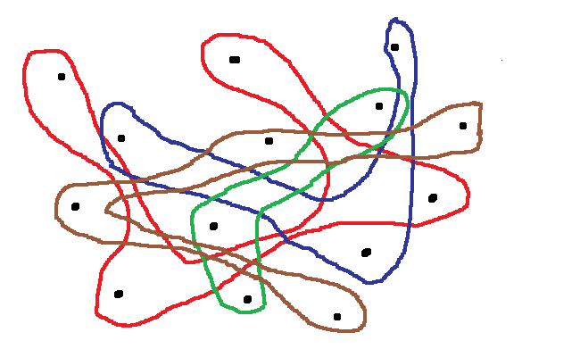
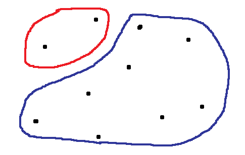

We are student from ULB(Université libre de Bruxelles). The Computational Geometry course request us to explore a geometry topic. This topic was chosen between several scientific articles. We should deeply understand this topic and create a vulgarisation content. We chose a counting problem: we have to count the numbers of points inside a triangle.
A good remark could be "Why do we need simplex range counting when we can simply check if a point is inside a triangle by using, for example, angles". In fact, it could be a right choice if you compute few times however the most applications call for querying the same set of points several time. For our game, for example, we need to check a lot of triangles to determine which triangle has the most points inside (for rule, look at the game page). Thus in these cases, we would like to answer it through a faster query. A big solution is to pre-process our points into a data structure like cuttings, partition trees, simplicial partitions, multi-level data structures, etc and use a algorithm taking advantages of these data-structures. On this page, we will present one of them in a friendly way: Simplex Range Searching. More specifically we are going to present D. E. Willard algorithm which is a algorithm using linear data size.
First of all, we are going to introduce the main concept. As it's easier to explain with plane and we need it later, we show it. Finally it will be transpose to triangles and it easier than you think. Indeed, we can see each edge as a line cutting our plane in 2 spaces.
Thus our goal is to calculate points numbers of a plane side. Except that we want a efficient way that allow us querying on a lot of possibilities. So a good way to increase the efficient is to do some pre-processing. Pre-processing is a piece of code used to sort our datas into some data-structure to get advantages of it. In our case, we are going to use partition trees. Why ? Before answer to this question, we need to understand how points are sorted in the tree.
Exercice: take some times to guess how we will use our tree.
We split our points into sub-set. Why is it interesting ? Imagine you have 8 sub-set, you have a line crossing the plane. As you can image, line cross some sub-set but some subset are not crossed. That means that the number of points inside this sub-set don't need to be compute. We only have to know, if the sub-set is outside or inside to space we are looking. That means that you can test 1 point instead of more points to answer.
However this subset must have 2 characteristics: the number of points in each subset must be substantially the same and the subset must take a set of points close to each other.
What do we do for the sub-set which were crossed ? We perform recursively the same algorithm on the sub-set. We split the space in n sub-space. That create n sub-set of points. We perform this algorithm until the sub-set is empty or have only 1 point.
Now we have our partition tree. We are going to take a random line, then the algorithm will look which subsets are crossed by this line. There are 2 cases:
Now, we have the main idea, we show 2 images explaining why the characteristics defined above are important
How we saw above, we want that some subset don't need to be compute. Here, in most case, when we draw a line, the line cross all the subset. So there is no subset where there is no need a work such that we can say directly if it's inside or outside
Now the majority of lines cross only the blue part. Even if we reduce the computation of 2. Big part of points are still in the determine face. What we want is that the number of points not calculated was not governed by randomness. We want that the number of points dismiss be constant. Otherwise the data-structure are not really usefull
In our algorithm, we will split our space in 4 parts. We are going to use 2 lines for the splitting. As we work with 4 spaces each time, our tree will be a 4-way tree. More specifically, there are 2 types of nodes. leafs nodes that only store a point and intermediare nodes that store the 2 cutting lines, the number of leaf under him and a reference to his 4 children. Little specification : Just above the leaf level, our partition tree will have maximum 4 children and at least 1 child.
We need a efficient algorithm to find our splitting lines. For that, we based ourself on the ham-sandwich theorem. (a nice video explaining the theorem). To summarize, it said that there exist a line cutting any space equally in 2. In our implementation (that you can test in the game section), we use the median. We sort our point with coordonate x and take the median. Aftherthat in each sub-sets(create by X-median) we sort our points with coordonate y and search the median in both sub-set. We take a points on each median and create a line crossing by the 2 points. It absolutly not the most efficient algorithm but it's the most intuitif and easy to implement. Futhermore, that is not our topic.
However the biggest difference from the general idea seen above is that we work with triangle.
We are not working with half-plane but with segment which are delimited. This implies 2 things :
As seen before and as it is our purpose, the space complexity is linear because we only use a partition tree and none other structure to store twice our points.
Time:
When we talk about time complexity, we usually use the notation "O()". We always calculate our complexity in the worst case. We also forgot the numeric part. So for example if our complexity is O(3/2N) we only note O(N).
First of all, let see the pre-processing, the only cost is the splitting our space in 4 sub-spaces. There exist an algorithm (in 2 dimensions) that is able to find the split in O(N). And like did the quicksort, we recursively do the same. Thus, the time complexity of the tree is O(N log(N))
Then, we calculate the time for a query on a triangle. In the normal case, without use the partition tree, we determine the number of points in O(N) because we will check for each point if it is in or out and there are n points.
For the half-plane, the time complexity go down to O(N α) where α is defined like LOG3(4). Why ? We have to remark that a half-plane can not cross all 4 sub-spaces. And in the worst case, the half-plane will cross 3 sub-spaces. So on each step, we work maximally with 3 sub-spaces. Thus, the 4 in the log is the number of sub-spaces and the 3 is the maximum of space crossed. Now let consider triangles, the complexity become O(N α + k). I recall that we can see triangle as 3 half-planes(but delimited). But we need to add a case when a sub-space is crossed by 2 lines, that's why we have the + k and k is egual to the number of sub-spaces on the same level.
Agarwal, Pankaj K. “Simplex Range Searching and Its Variants: A Review.” A Journey Through Discrete Mathematics. Cham: Springer International Publishing, 2017. 1–30. Web.
D. E. Willard, Polygon retrieval, SIAM J. Comput., 11 (1982), 149–165.
Lo, Chi-Yuan, J. Matoušek, and W. Steiger. “Algorithms for Ham-Sandwich Cuts.” Discrete & computational geometry 11.4 (1994): 433–452. Web.
Arnaud Cools
Kellian Germain